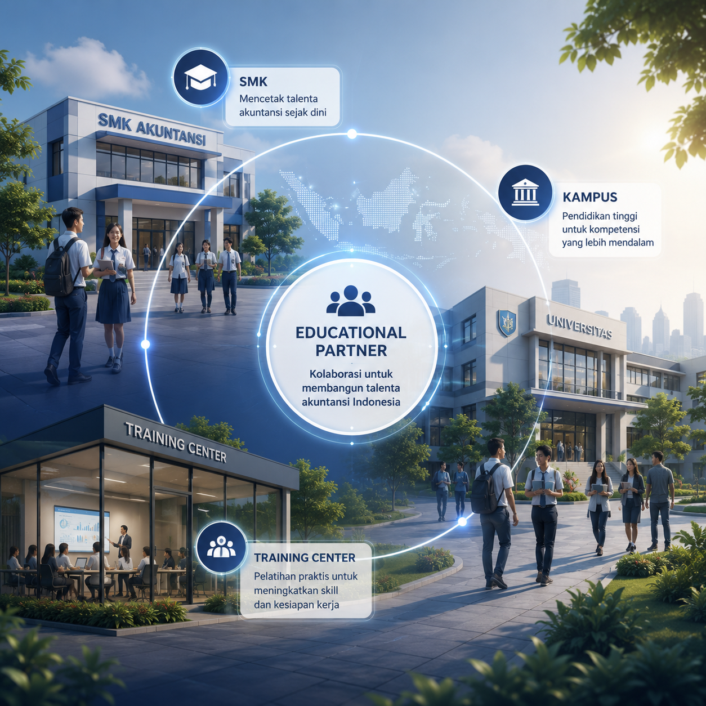
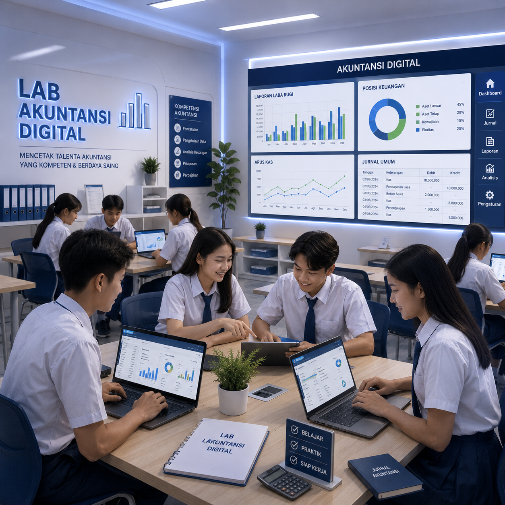
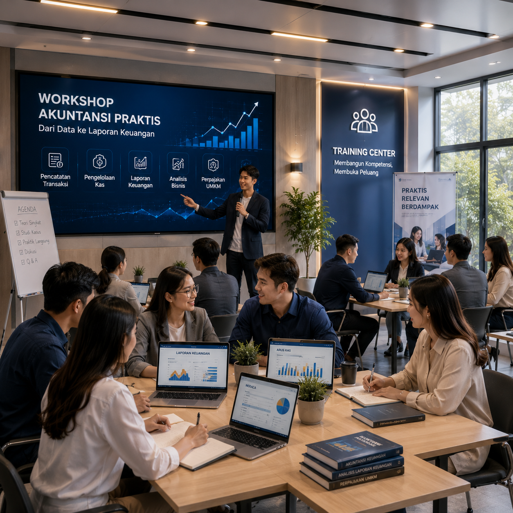
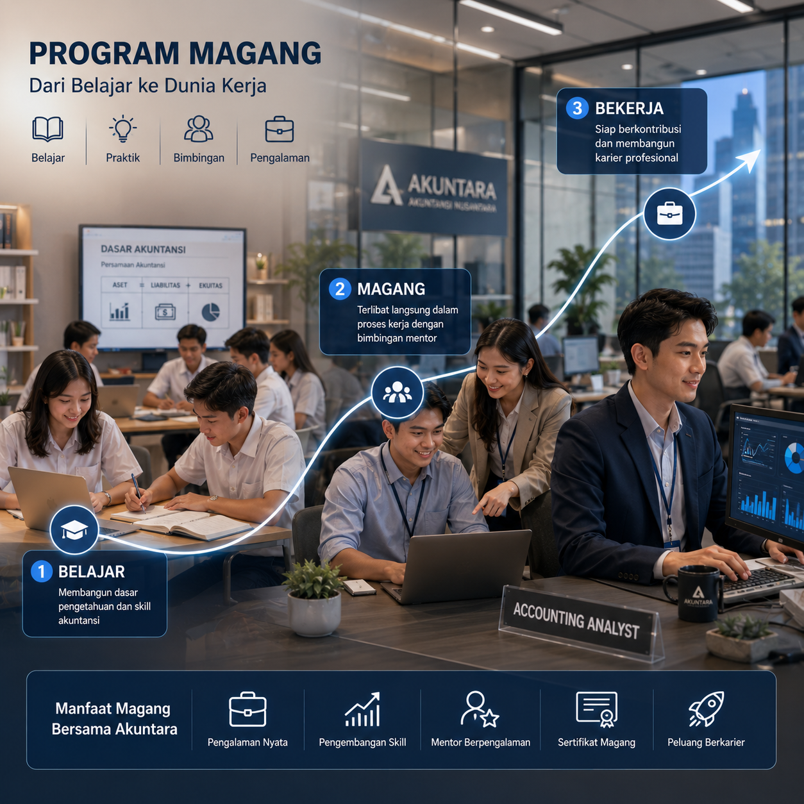

Jalin kemitraan pendidikan untuk membangun talenta akuntansi digital Indonesia.
Akuntara berkolaborasi dengan SMK, universitas, training center, komunitas, dan mitra strategis untuk mempertemukan pendidikan akuntansi dengan kebutuhan nyata UMKM.
Kemitraan yang menghubungkan ruang belajar dengan kebutuhan industri UMKM.
SMK
Program untuk siswa akuntansi yang membutuhkan exposure kerja digital dan praktik nyata.
Universitas
Kolaborasi magang, riset terapan, dan pengembangan talenta junior accountant.
Training Center
Sinergi kurikulum dan pelatihan untuk memperkuat kompetensi akuntansi digital.
Dari kurikulum sampai pengalaman kerja yang lebih terarah.
Partner bukan hanya sumber talent. Bagi Akuntara, sekolah, kampus, komunitas, dan mitra pelatihan adalah bagian penting dari misi membangun ekosistem akuntansi digital Indonesia.

Magang / PKL
Program bertahap dengan alur verifikasi, training, praktik, dan supervisi.
Kurikulum Berbasis Industri
Masukan materi praktik berbasis kasus UMKM, dokumen transaksi, dan proses review.
Pelatihan Praktis
Sesi pengenalan pencatatan digital, dokumen bisnis, dan standar kerja accounting service.
Sertifikasi Internal
Pengakuan kompetensi berbasis training dan evaluasi Akuntara untuk calon operator.
Talent Development
Pemetaan kemampuan siswa dan alumni untuk masuk jalur operator, reviewer, atau supervisor.
Penempatan Talent Potensial
Talent terbaik dapat diarahkan ke proyek UMKM yang sesuai dengan kapasitasnya.
Kolaborasi yang memberi dampak bagi talent, UMKM, dan pendidikan.
Melalui kemitraan yang tepat, materi akuntansi tidak berhenti di kelas. Talent dapat belajar dari kebutuhan bisnis nyata, sementara UMKM mendapat dukungan proses yang lebih berkualitas.
SMK Akuntansi
Kolaborasi untuk exposure kerja digital, simulasi dokumen UMKM, dan jalur PKL yang lebih dekat dengan kebutuhan industri.

Kampus
Ruang untuk magang, riset terapan, studi kasus, dan pengembangan junior accountant berbasis pekerjaan nyata.
Training Center
Sinergi modul pelatihan pencatatan digital, SOP, dan kesiapan talent sebelum masuk ke ekosistem kerja.

Program Magang
Alur bertahap dari verifikasi, training, praktik, feedback, hingga evaluasi kompetensi untuk calon operator.

Komunitas Profesi
Kolaborasi edukasi, talent pool, acara komunitas, dan jejaring profesional akuntansi digital.
Bangun jalur pendidikan akuntansi digital bersama Akuntara.
Daftarkan minat kemitraan, lalu tim Akuntara akan membantu memetakan bentuk kolaborasi yang paling relevan untuk institusi Anda.